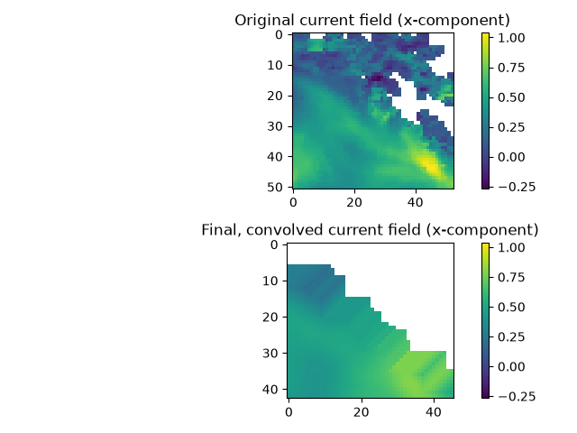
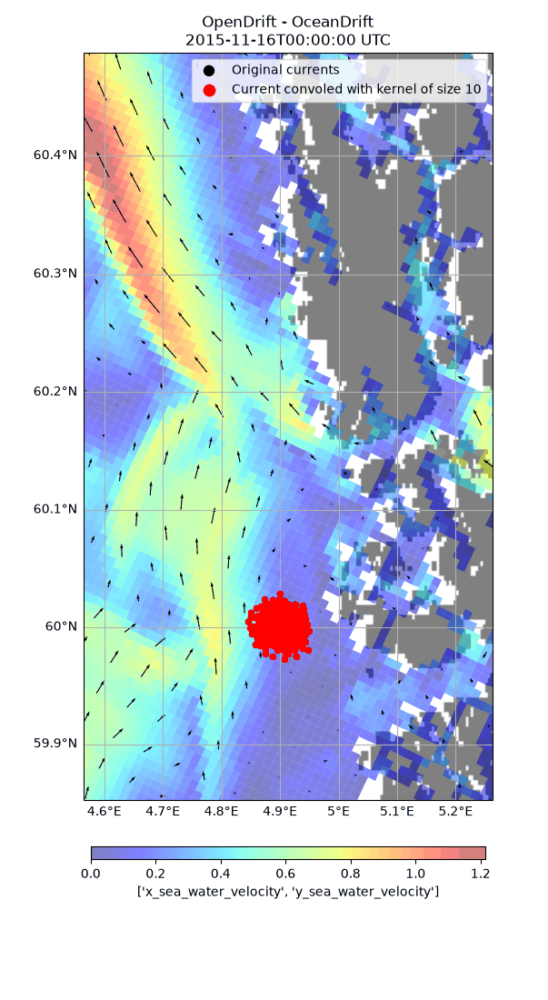
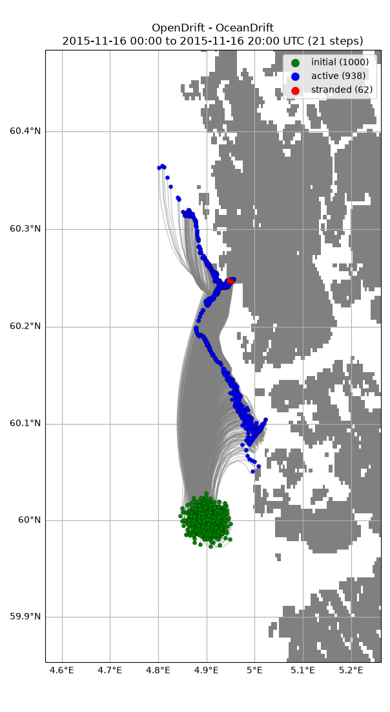

Note
Go to the end to download the full example code.
Convolve input
Decreasing the spatial resolution of fields from a reader by convolution. This may improve accuracy, see: https://doi.org/10.1016/j.rse.2019.01.001
from datetime import datetime, timedelta
import matplotlib.pyplot as plt
from opendrift import test_data_folder as tdf
from opendrift.readers import reader_netCDF_CF_generic
from opendrift.models.oceandrift import OceanDrift
lon = 4.9; lat = 60.0
o = OceanDrift(loglevel=20)
reader_norkyst = reader_netCDF_CF_generic.Reader(tdf + '16Nov2015_NorKyst_z_surface/norkyst800_subset_16Nov2015.nc')
time = reader_norkyst.start_time
o.add_reader([reader_norkyst])
o.seed_elements(lon, lat, radius=1000, number=1000, time=time)
o.run(steps=20)
16:08:49 INFO opendrift:576: OpenDriftSimulation initialised (version 1.14.6 / v1.14.6-20-gd60eace)
16:08:49 INFO opendrift.readers:63: Opening file with xr.open_dataset
16:08:49 INFO opendrift.readers.reader_netCDF_CF_generic:332: Detected dimensions: {'x': 'X', 'y': 'Y', 'z': 'depth', 'time': 'time'}
16:08:49 INFO opendrift.models.basemodel.environment:203: Adding a global landmask from GSHHG
16:08:53 INFO opendrift.models.basemodel.environment:227: Fallback values will be used for the following variables which have no readers:
16:08:53 INFO opendrift.models.basemodel.environment:230: sea_surface_height: 0.000000
16:08:53 INFO opendrift.models.basemodel.environment:230: x_wind: 0.000000
16:08:53 INFO opendrift.models.basemodel.environment:230: y_wind: 0.000000
16:08:53 INFO opendrift.models.basemodel.environment:230: upward_sea_water_velocity: 0.000000
16:08:53 INFO opendrift.models.basemodel.environment:230: ocean_vertical_diffusivity: 0.000000
16:08:53 INFO opendrift.models.basemodel.environment:230: sea_surface_wave_significant_height: 0.000000
16:08:53 INFO opendrift.models.basemodel.environment:230: sea_surface_wave_stokes_drift_x_velocity: 0.000000
16:08:53 INFO opendrift.models.basemodel.environment:230: sea_surface_wave_stokes_drift_y_velocity: 0.000000
16:08:53 INFO opendrift.models.basemodel.environment:230: ocean_mixed_layer_thickness: 50.000000
16:08:53 INFO opendrift.models.basemodel.environment:230: sea_floor_depth_below_sea_level: 10000.000000
16:08:53 INFO opendrift:1803: Skipping environment variable ocean_vertical_diffusivity because of condition ['drift:vertical_mixing', 'is', False]
16:08:53 INFO opendrift:1803: Skipping environment variable ocean_mixed_layer_thickness because of condition ['drift:vertical_mixing', 'is', False]
16:08:53 INFO opendrift:1814: Storing previous values of element property lon because of condition (('general:coastline_action', 'in', ['stranding', 'previous']), 'or', ('general:seafloor_action', 'in', ['previous']))
16:08:53 INFO opendrift:1814: Storing previous values of element property lat because of condition (('general:coastline_action', 'in', ['stranding', 'previous']), 'or', ('general:seafloor_action', 'in', ['previous']))
16:08:53 INFO opendrift:1822: Storing previous values of environment variable sea_surface_height because of condition ['drift:vertical_advection', 'is', True]
16:08:53 INFO opendrift:952: Using existing reader for land_binary_mask to move elements to ocean
16:08:53 INFO opendrift:982: All points are in ocean
16:08:53 INFO opendrift:2111: 2015-11-16 00:00:00 - step 1 of 20 - 1000 active elements (0 deactivated)
16:08:54 INFO opendrift:2111: 2015-11-16 01:00:00 - step 2 of 20 - 1000 active elements (0 deactivated)
16:08:54 INFO opendrift:2111: 2015-11-16 02:00:00 - step 3 of 20 - 1000 active elements (0 deactivated)
16:08:54 INFO opendrift:2111: 2015-11-16 03:00:00 - step 4 of 20 - 1000 active elements (0 deactivated)
16:08:54 INFO opendrift:2111: 2015-11-16 04:00:00 - step 5 of 20 - 1000 active elements (0 deactivated)
16:08:54 INFO opendrift:2111: 2015-11-16 05:00:00 - step 6 of 20 - 1000 active elements (0 deactivated)
16:08:54 INFO opendrift:2111: 2015-11-16 06:00:00 - step 7 of 20 - 1000 active elements (0 deactivated)
16:08:54 INFO opendrift:2111: 2015-11-16 07:00:00 - step 8 of 20 - 1000 active elements (0 deactivated)
16:08:54 INFO opendrift:2111: 2015-11-16 08:00:00 - step 9 of 20 - 1000 active elements (0 deactivated)
16:08:54 INFO opendrift:2111: 2015-11-16 09:00:00 - step 10 of 20 - 1000 active elements (0 deactivated)
16:08:54 INFO opendrift:2111: 2015-11-16 10:00:00 - step 11 of 20 - 1000 active elements (0 deactivated)
16:08:54 INFO opendrift:2111: 2015-11-16 11:00:00 - step 12 of 20 - 1000 active elements (0 deactivated)
16:08:54 INFO opendrift:2111: 2015-11-16 12:00:00 - step 13 of 20 - 1000 active elements (0 deactivated)
16:08:54 INFO opendrift:2111: 2015-11-16 13:00:00 - step 14 of 20 - 1000 active elements (0 deactivated)
16:08:54 INFO opendrift:2111: 2015-11-16 14:00:00 - step 15 of 20 - 1000 active elements (0 deactivated)
16:08:54 INFO opendrift:2111: 2015-11-16 15:00:00 - step 16 of 20 - 1000 active elements (0 deactivated)
16:08:54 INFO opendrift:2111: 2015-11-16 16:00:00 - step 17 of 20 - 1000 active elements (0 deactivated)
16:08:54 INFO opendrift:2111: 2015-11-16 17:00:00 - step 18 of 20 - 1000 active elements (0 deactivated)
16:08:54 INFO opendrift:2111: 2015-11-16 18:00:00 - step 19 of 20 - 1000 active elements (0 deactivated)
16:08:54 INFO opendrift:2111: 2015-11-16 19:00:00 - step 20 of 20 - 1000 active elements (0 deactivated)
Store final field of x-component of current
original_current = reader_norkyst.var_block_after[list(reader_norkyst.var_block_after.keys())[0]].data_dict['x_sea_water_velocity'].copy()
For the second run, the NorKyst currents are convolved with a kernel, effectively lowering the spatial resolution. <reader>.set_convolution_kernel may also be given as an array (kernel) directly
N = 10 # Convolusion kernel size
reader_norkyst.set_convolution_kernel(N) # Using convolution kernel for second run
o2 = OceanDrift(loglevel=20)
o2.add_reader([reader_norkyst])
o2.seed_elements(lon, lat, radius=1000, number=1000, time=time)
o2.run(steps=20)
16:08:57 INFO opendrift:576: OpenDriftSimulation initialised (version 1.14.6 / v1.14.6-20-gd60eace)
16:08:57 INFO opendrift.models.basemodel.environment:203: Adding a global landmask from GSHHG
16:08:57 INFO opendrift.models.basemodel.environment:227: Fallback values will be used for the following variables which have no readers:
16:08:57 INFO opendrift.models.basemodel.environment:230: sea_surface_height: 0.000000
16:08:57 INFO opendrift.models.basemodel.environment:230: x_wind: 0.000000
16:08:57 INFO opendrift.models.basemodel.environment:230: y_wind: 0.000000
16:08:57 INFO opendrift.models.basemodel.environment:230: upward_sea_water_velocity: 0.000000
16:08:57 INFO opendrift.models.basemodel.environment:230: ocean_vertical_diffusivity: 0.000000
16:08:57 INFO opendrift.models.basemodel.environment:230: sea_surface_wave_significant_height: 0.000000
16:08:57 INFO opendrift.models.basemodel.environment:230: sea_surface_wave_stokes_drift_x_velocity: 0.000000
16:08:57 INFO opendrift.models.basemodel.environment:230: sea_surface_wave_stokes_drift_y_velocity: 0.000000
16:08:57 INFO opendrift.models.basemodel.environment:230: ocean_mixed_layer_thickness: 50.000000
16:08:57 INFO opendrift.models.basemodel.environment:230: sea_floor_depth_below_sea_level: 10000.000000
16:08:57 INFO opendrift:1803: Skipping environment variable ocean_vertical_diffusivity because of condition ['drift:vertical_mixing', 'is', False]
16:08:57 INFO opendrift:1803: Skipping environment variable ocean_mixed_layer_thickness because of condition ['drift:vertical_mixing', 'is', False]
16:08:57 INFO opendrift:1814: Storing previous values of element property lon because of condition (('general:coastline_action', 'in', ['stranding', 'previous']), 'or', ('general:seafloor_action', 'in', ['previous']))
16:08:57 INFO opendrift:1814: Storing previous values of element property lat because of condition (('general:coastline_action', 'in', ['stranding', 'previous']), 'or', ('general:seafloor_action', 'in', ['previous']))
16:08:57 INFO opendrift:1822: Storing previous values of environment variable sea_surface_height because of condition ['drift:vertical_advection', 'is', True]
16:08:57 INFO opendrift:952: Using existing reader for land_binary_mask to move elements to ocean
16:08:57 INFO opendrift:982: All points are in ocean
16:08:57 INFO opendrift:2111: 2015-11-16 00:00:00 - step 1 of 20 - 1000 active elements (0 deactivated)
16:08:58 INFO opendrift:2111: 2015-11-16 01:00:00 - step 2 of 20 - 1000 active elements (0 deactivated)
16:08:58 INFO opendrift:2111: 2015-11-16 02:00:00 - step 3 of 20 - 1000 active elements (0 deactivated)
16:08:58 INFO opendrift:2111: 2015-11-16 03:00:00 - step 4 of 20 - 1000 active elements (0 deactivated)
16:08:58 INFO opendrift:2111: 2015-11-16 04:00:00 - step 5 of 20 - 1000 active elements (0 deactivated)
16:08:58 INFO opendrift:2111: 2015-11-16 05:00:00 - step 6 of 20 - 1000 active elements (0 deactivated)
16:08:58 INFO opendrift:2111: 2015-11-16 06:00:00 - step 7 of 20 - 1000 active elements (0 deactivated)
16:08:58 INFO opendrift:2111: 2015-11-16 07:00:00 - step 8 of 20 - 1000 active elements (0 deactivated)
16:08:58 INFO opendrift:2111: 2015-11-16 08:00:00 - step 9 of 20 - 1000 active elements (0 deactivated)
16:08:58 INFO opendrift:2111: 2015-11-16 09:00:00 - step 10 of 20 - 1000 active elements (0 deactivated)
16:08:58 INFO opendrift:2111: 2015-11-16 10:00:00 - step 11 of 20 - 1000 active elements (0 deactivated)
16:08:58 INFO opendrift:2111: 2015-11-16 11:00:00 - step 12 of 20 - 1000 active elements (0 deactivated)
16:08:58 INFO opendrift:2111: 2015-11-16 12:00:00 - step 13 of 20 - 1000 active elements (0 deactivated)
16:08:58 INFO opendrift:2111: 2015-11-16 13:00:00 - step 14 of 20 - 1000 active elements (0 deactivated)
16:08:58 INFO opendrift:2111: 2015-11-16 14:00:00 - step 15 of 20 - 1000 active elements (0 deactivated)
16:08:58 INFO opendrift:2111: 2015-11-16 15:00:00 - step 16 of 20 - 1000 active elements (0 deactivated)
16:08:58 INFO opendrift:2111: 2015-11-16 16:00:00 - step 17 of 20 - 999 active elements (1 deactivated)
16:08:58 INFO opendrift:2111: 2015-11-16 17:00:00 - step 18 of 20 - 999 active elements (1 deactivated)
16:08:58 INFO opendrift:2111: 2015-11-16 18:00:00 - step 19 of 20 - 999 active elements (1 deactivated)
16:08:58 INFO opendrift:2111: 2015-11-16 19:00:00 - step 20 of 20 - 999 active elements (1 deactivated)
Store final field of x-component of (convolved) current
convolved_current = reader_norkyst.var_block_after[
"['x_sea_water_velocity', 'y_sea_water_velocity']"].data_dict['x_sea_water_velocity']
plt.subplot(2,1,1)
plt.imshow(original_current, interpolation='nearest')
plt.title('Original current field (x-component)')
clim = plt.gci().get_clim()
plt.colorbar()
plt.subplot(2,1,2)
plt.imshow(convolved_current, interpolation='nearest')
plt.clim(clim) # Make sure plots are comparable
plt.colorbar()
plt.title('Final, convolved current field (x-component)')
plt.show()

Print and plot results, with convolved currents as background
print(o)
o.animation(compare=o2, fast=True, legend=[
'Original currents', 'Current convoled with kernel of size %s' % N],
background=['x_sea_water_velocity', 'y_sea_water_velocity'])
===========================
--------------------
Reader performance:
--------------------
/root/project/tests/test_data/16Nov2015_NorKyst_z_surface/norkyst800_subset_16Nov2015.nc
0:00:00.2 total
0:00:00.0 preparing
0:00:00.2 reading
0:00:00.0 interpolation
0:00:00.0 interpolation_time
0:00:00.0 rotating vectors
0:00:00.0 masking
--------------------
global_landmask
0:00:01.6 total
0:00:00.0 preparing
0:00:01.6 reading
0:00:00.0 masking
--------------------
Performance:
8.5 total time
4.6 configuration
0.0 preparing main loop
0.0 moving elements to ocean
2.2 main loop
0.0 updating elements
1.6 cleaning up
--------------------
===========================
Model: OceanDrift (OpenDrift version 1.14.6)
938 active Lagrangian3DArray particles (62 deactivated, 0 scheduled)
-------------------
Environment variables:
-----
x_sea_water_velocity
y_sea_water_velocity
1) /root/project/tests/test_data/16Nov2015_NorKyst_z_surface/norkyst800_subset_16Nov2015.nc
-----
land_binary_mask
1) global_landmask
-----
Readers not added for the following variables:
sea_floor_depth_below_sea_level
sea_surface_height
sea_surface_wave_significant_height
sea_surface_wave_stokes_drift_x_velocity
sea_surface_wave_stokes_drift_y_velocity
upward_sea_water_velocity
x_wind
y_wind
Discarded readers:
Time:
Start: 2015-11-16 00:00:00 UTC
Present: 2015-11-16 20:00:00 UTC
Calculation steps: 20 * 1:00:00 - total time: 20:00:00
Output steps: 21 * 1:00:00
===========================
16:08:59 WARNING opendrift:2470: Plotting fast. This will make your plots less accurate.
16:09:12 INFO opendrift:4646: Saving animation to /root/project/docs/source/gallery/animations/example_convolve_input_0.gif...
16:10:32 INFO opendrift:3081: Time to make animation: 0:01:33.079750

o.plot(fast=True)

16:10:32 WARNING opendrift:2470: Plotting fast. This will make your plots less accurate.
(<GeoAxes: title={'center': 'OpenDrift - OceanDrift\n2015-11-16 00:00 to 2015-11-16 20:00 UTC (21 steps)'}>, <Figure size 705.673x1100 with 1 Axes>)
Total running time of the script: (1 minutes 52.002 seconds)